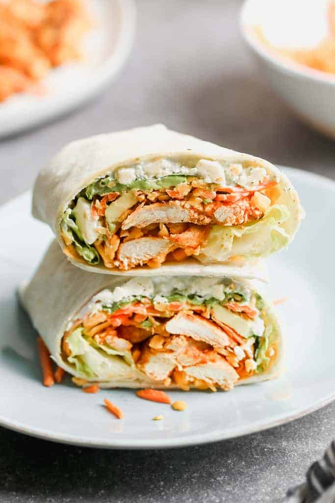

Chicken Wrap

Description
These spicy chicken wraps have a creamy sauce made with mayo, honey, and cucumber to create an easy summer meal that will rock your taste buds!
2 tablespoons olive oil
1 ½ pounds skinless, boneless chicken breast halves - cut into thin strips
1 cup thick and chunky salsa
1 tablespoon honey
½ teaspoon cayenne pepper
8 (10 inch) flour tortillas
1 (10 ounce) bag baby spinach leaves
Steps
Make the sauce: Mix mayonnaise, cucumber, honey, cayenne pepper, and black pepper together in a bowl until smooth. Cover and refrigerate until needed.
Make the wraps: Heat olive oil in a skillet on medium-high heat. Add chicken strips; cook and stir until they start to turn golden and are no longer pink in the middle, about 8 minutes. Stir in salsa, honey, and cayenne pepper. Reduce the heat to medium-low; simmer, stirring occasionally, until flavors have blended, about 5 minutes.
Stack tortillas, 4 at a time, in a microwave oven and heat until warm and pliable, 20 to 30 seconds per batch.
Spread each tortilla with 1 tablespoon mayonnaise-cucumber sauce, top with a layer of spinach, and arrange about 1/2 cup of the chicken mixture on top.
Fold the bottom of each tortilla up about 2 inches, and start rolling from the right side. When wrap is halfway rolled, fold the top of the tortilla down, enclosing the filling, and continue rolling to make a tight, compact cylinder.